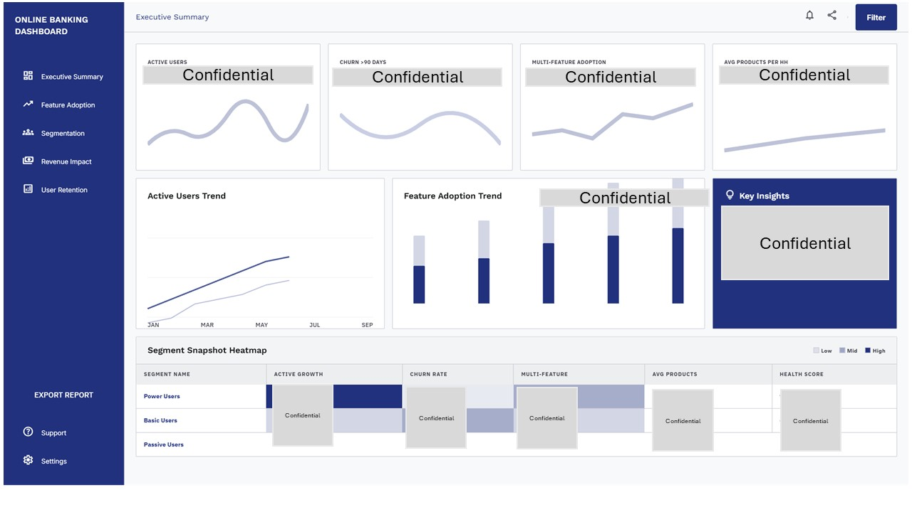
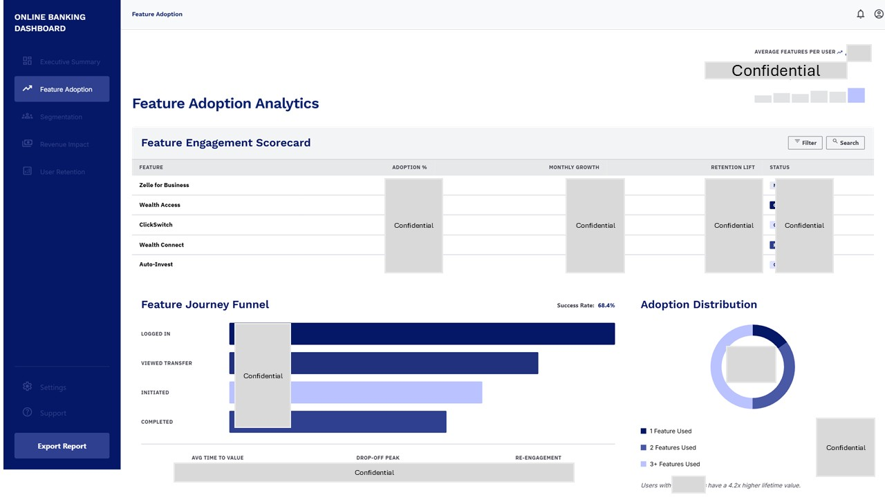

Using 35M+ behavioral records to decide which features to launch, and who to launch them to.
The digital banking team wanted to identify growth opportunities by understanding customer behavior and evaluating which emerging financial features could drive higher engagement. The goal was to leverage customer data to prioritize feature launches, define target segments, and build a data-driven adoption strategy for new digital capabilities — including Zelle for Business, ClickSWITCH, and WealthAccess.
With over 35M+ digital banking records spanning online banking activity, transaction behavior, and core banking data, the raw signal existed. What didn't exist was a framework to turn it into product decisions.
How can we identify the right customers for new digital banking features — and maximize adoption after launch?
I partnered with digital banking stakeholders to run end-to-end product analytics — from raw behavioral data through to a ranked launch audience for each feature.
1. Customer behavior analysis
Analyzed 35M+ digital banking events and transaction records using SQL and machine learning techniques to understand:
2. Customer segmentation & target audience identification
Developed behavioral customer segments to identify the users most likely to adopt each new digital feature. For Zelle for Business, I evaluated the business customer opportunity across:

Executive summary — active users, 90-day churn, multi-feature adoption, and average products per household, with a segment health heatmap across Power, Basic, and Passive users. Metrics redacted for confidentiality.

Feature adoption — engagement scorecard by feature, journey funnel from login through completion, and adoption distribution by feature depth. Metrics redacted for confidentiality.
Zelle for Business
Analyzed customer payment behaviors to identify:
Identified the top 3 business segments to prioritize during product launch, ranked on transaction behavior, engagement level, and feature fit.
ClickSWITCH & WealthAccess
Applied the same segmentation framework across both features to:
The result was a repeatable model — one segmentation framework the product team could apply to any future feature, rather than a one-off analysis tied to a single launch.